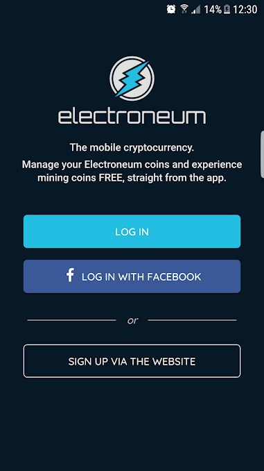
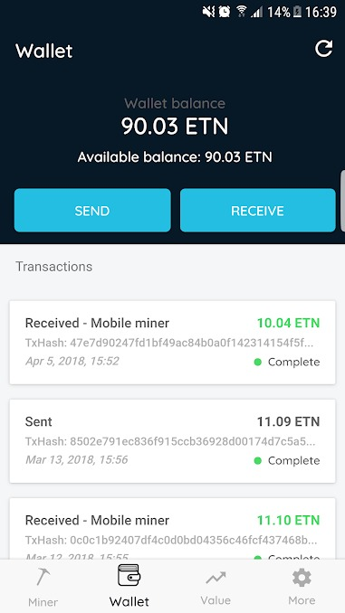
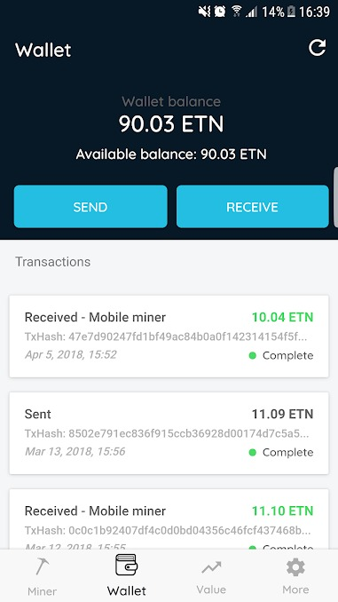

Chap 5 - Utilisation des composants Ionic
Ionic est constitué de blocs d'élements de haut niveau appelés composants. Les composants vous permettent de créer rapidement une interface pour votre application.
Le framework propose pléthore de composants, du bouton au toast, en passant par des listes d'éléments, soit suffisament d'UI pour développer à peu près tout type d'application.
Chaque composant à son propre API. Ce qui permet de l'exploiter au maximum. Etudions quelques-uns d'entre eux qui nous seront bien utiles.
Liste des composants : https://ionicframework.com/docs/components/
Exercez-vous
Dans cette série d'exercies, nous allons pouvoir améliorer un peu notre application. On va s'inspirer d'une design d'une application qui nommé Electroneum.
Electroneum est une cryptomonnaie dédiée au secteur du mobile. Une application de la cryptomonnaie existe et est disponible pour Android et prochainement pour iOS.
- Version Android : https://play.google.com/store/apps/details?id=com.electroneum.mobile
Dans ce TP, nous allons, à l'aide des composants tenter de nous rapprocher le plus possible de l'application (voir screen en pièce jointe)
1) Créez une nouvelle page que vous nommérez Login. Ce sera notre page de connexion et d'inscription.
Faites que cette page soit la page par défaut, en modifiant le fichier src/app/app.component.ts
2) Utilisez les composants Ionic pour rapprocher cette page le plus proche possible du screen ci-dessous, en adaptant au passage le style et le texte. De plus, vous rajouterez juste avant le bouton de login deux input pour saisir son identifiant et mot de passe.

3) Faites qu'au clic sur le bouton login on puisse accéder à la page d'accueil avec les différents onglets (voir pour inspiration la fonction gotoHome() : https://github.com/charlesen/duckcoin/blob/master/src/pages/profile/profile.ts )
4) Sans modifier l'onglet Accueil, adaptez les autres onglets Minage, Portefeuille
P.S. : Ionic propose un ensemble d'icônes que l'on peut intégrer facilement dans l'appli.
<ion-icon name="home"></ion-icon>
La liste de toutes les icônes disponibles se trouve à l'adresse https://ionicframework.com/docs/ionicons/
 

5) Améliorez les onglets Profil et More (page Settings créé dans le TP précédent) avec différents aux composants. Dans l'onglet Setting on pourra par exemple avoir la possibilité de choisir plusieurs devises différentes et d'en cocher une par défaut, ou encore de choisir la langue par défaut,...laissez libre cours à votre imagination ;-)
Annexes
- Liste des composants Ionic et Documentation : https://ionicframework.com/docs/components/